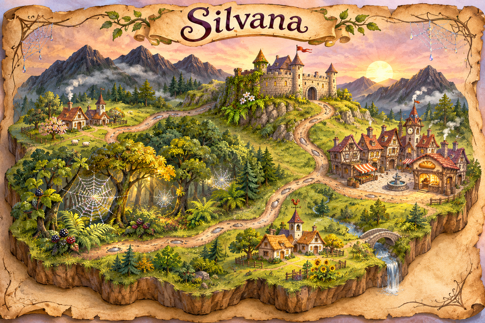

✧
Silvana
Geschichten zum Lesen und Vorlesen
Aa · Größe ändern
Schrift
100 %
Spielfeld
100 %
Stelle Schrift und Spielfeld unabhängig voneinander ein.
Szene 1
Szene 2
Die Geschichte beginnt
Einführung · Abschnitt 1
1
Zuhören
2
Selbst lesen
3
Domino legen
← Zurück
Bitte aktiviere JavaScript, um das Domino zu spielen.
